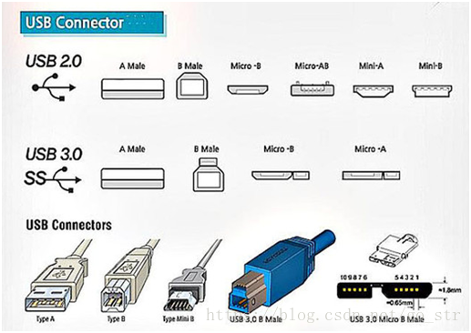
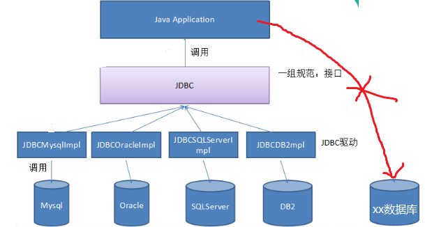
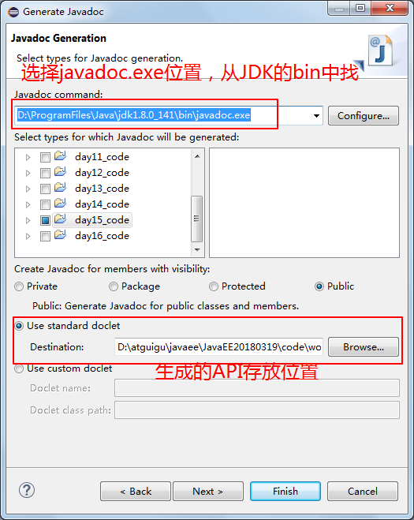
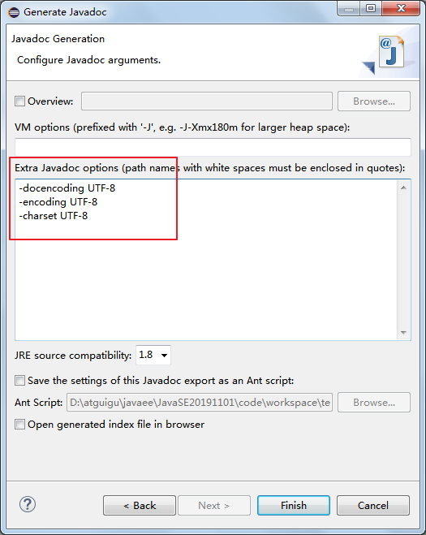
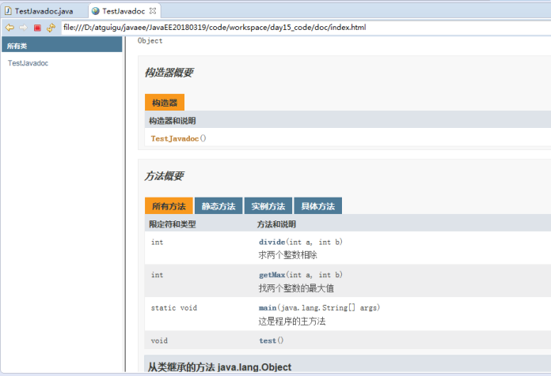
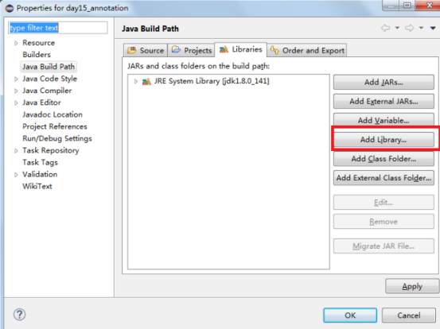
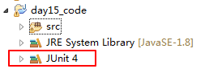

第7章 面向对象基础（下）
学习目标
-
能够声明抽象类
-
能够说出抽象类的特点
-
能够继承抽象类
-
掌握声明接口的格式
-
掌握实现接口的格式
-
说出接口中成员的特点
-
说出接口的其他特点
-
掌握static关键字的用法
-
说出内部类的几种形式
-
能够声明静态内部类和非静态成员内部类
-
能够看懂和声明匿名内部类
-
能够使用系统预定义的三个基本注解
-
能够编写文档注释
-
能够使用JUnit框架的@Test注解
第七章 面向对象基础--下（续）
7.1 抽象类
7.1.1 引入
抽象：即不具体、或无法具体
例如：当我们声明一个几何图形类：圆、矩形、三角形类等，发现这些类都有共同特征：求面积、求周长、获取图形详细信息。那么这些共同特征应该抽取到一个公共父类中。但是这些方法在父类中又无法给出具体的实现，而是应该交给子类各自具体实现。那么父类在声明这些方法时，就只有方法签名，没有方法体，我们把没有方法体的方法称为抽象方法。Java语法规定，包含抽象方法的类必须是抽象类。
动物 - 猫 - 狗案例：动物类方法无需具体实现
7.1.2 语法格式
- 抽象方法 ： 没有方法体的方法。
- 抽象类：被abstract所修饰的类。
抽象类的语法格式
【权限修饰符】 abstract class 类名{ }【权限修饰符】 abstract class 类名 extends 父类{ }抽象方法的语法格式
xxxxxxxxxx【其他修饰符】 abstract 返回值类型 方法名(【形参列表】);注意：抽象方法没有方法体
代码举例：
xxxxxxxxxxpublic abstract class Animal { public abstract void run()；}xxxxxxxxxxpublic class Cat extends Animal { public void run (){ System.out.println("小猫在墙头走~~~")； }}xxxxxxxxxxpublic class CatTest { public static void main(String[] args) { // 创建子类对象 Cat c = new Cat(); // 调用run方法 c.run(); }}输出结果：小猫在墙头走~~~此时的方法重写，是子类对父类抽象方法的完成实现，我们将这种方法重写的操作，也叫做实现方法。
7.1.3 抽象类特点
关于抽象类的使用，以下为语法上要注意的细节，虽然条目较多，但若理解了抽象的本质，无需死记硬背。
抽象类不能创建对象，如果创建，编译无法通过而报错。只能创建其非抽象子类的对象。
理解：假设创建了抽象类的对象，调用抽象的方法，而抽象方法没有具体的方法体，没有意义。
抽象类中，也有构造方法，是供子类创建对象时，初始化父类成员变量使用的。
理解：子类的构造方法中，有默认的super()或手动的super(实参列表)，需要访问父类构造方法。
抽象类中，不一定包含抽象方法，但是有抽象方法的类必定是抽象类。
理解：未包含抽象方法的抽象类，目的就是不想让调用者创建该类对象，通常用于某些特殊的类结构设计。
抽象类的子类，必须重写抽象父类中所有的抽象方法，否则，编译无法通过而报错。除非该子类也是抽象类。
理解：假设不重写所有抽象方法，则类中可能包含抽象方法。那么创建对象后，调用抽象的方法，没有意义。
7.1.4 练习
练习1
定义一个几何图形父类Graphic。所有几何图形都应该具备一个计算面积的方法。但是不同的几何图形计算面积的方式完全不同。
xabstract class Graphic{public abstract double getArea();}class Circle extends Graphic{private double radius;public Circle(double radius) {super();this.radius = radius;}public Circle() {super();}public double getRadius() {return radius;}public void setRadius(double radius) {this.radius = radius;}public double getArea() {return Math.PI * radius * radius;}}class Rectangle extends Graphic{private double length;private double width;public Rectangle(double length, double width) {super();this.length = length;this.width = width;}public Rectangle() {super();}public double getLength() {return length;}public void setLength(double length) {this.length = length;}public double getWidth() {return width;}public void setWidth(double width) {this.width = width;}public double getArea() {return length * width;}}练习2
1、声明抽象父类：Person，包含抽象方法： public abstract void walk(); public abstract void eat();
2、声明子类Man，继承Person 重写walk()：大步流星走路 重写eat()：狼吞虎咽吃饭 新增方法：public void smoke()实现为吞云吐雾
3、声明子类Woman，继承Person 重写walk()：婀娜多姿走路 重写eat()：细嚼慢咽吃饭 新增方法：public void buy()实现为买买买...
4、在测试类中创建子类对象，调用方法测试
xxxxxxxxxxpublic abstract class Person {public abstract void walk();public abstract void eat();}xxxxxxxxxxpublic class Man extends Person {public void walk() {System.out.println("大步流星走路");}public void eat() {System.out.println("狼吞虎咽吃饭");}public void smoke(){System.out.println("吞云吐雾");}}public class Woman extends Person { @Override public void walk() { System.out.println("婀娜多姿走路"); } @Override public void eat() { System.out.println("细嚼慢咽吃饭"); } public void buy(){ System.out.println("买买买..."); } }public class TestExer1 { public static void main(String[] args) { Man m = new Man(); m.eat(); m.walk(); m.smoke(); System.out.println("-------------------------"); Woman w = new Woman(); w.eat(); w.walk(); w.buy(); } }
7.2 接口（interface）
7.2.1 概述
一方面 ，有时必须从几个类中派生出一个子类，继承它们所有的属性和方法。但是 ， Java不支持多重继承。有了接口 ，就可以得到多重继承的效果 。
public abstract class Animal{ public abstract void eat();} public abstract class Jumpable{public abstract void jump();} //定义一个Cat类如何能获取这两个类中的eat和jump功能，java类因为单继承，无法做到另一方面，有时必须从几个类中抽取出一些共同的行为特征，而它们之间又没有 is -a的关系，仅是具有相同行为特征而已 。例如 ：鼠标、键盘、打印机、 扫描仪、摄像头、充电器、移动硬盘等都支持USB连接 。
public class Mouse{ publicvoid usb(){}} public class Keyboard{ publicvoid usb(){}} public class Printer{ publicvoid usb(){}} public class Scanner{ publicvoid usb(){}} //如何提取共同特征？把usb功能提取到一个叫Usb的父类中？继承描述的是is-a关系，显然这些设备类并not is a Usb,这样提取不合适。接口的本质是契约，标准规范 。
生活中大家每天都在用USB接口，那么USB接口与我们今天要学习的接口有什么相同点呢？
USB是通用串行总线的英文缩写，是Intel公司开发的总线架构，使得在计算机上添加串行设备（鼠标、键盘、打印机、扫描仪、摄像头、充电器、MP3机、手机、数码相机、移动硬盘等）非常容易。只须将设备插入计算机的USB端口中，系统会自动识别和配置。 有了USB，我们电脑需要提供的各种插槽的口越来越少，而能支持的其他设备的连接却越来越多。
那么我们平时看到的电脑上的USB插口、以及其他设备上的USB插口是什么呢？
其实，不管是电脑上的USB插口，还是其他设备上的USB插口都只是遵循了USB规范的一种具体设备而已。
根据时代发展，USB接口标准经历了一代USB、第二代USB 2.0和第三代USB 3.0 。
USB规格第一次是于1995年，由Intel、IBM、Compaq、Microsoft、NEC、Digital、North Telecom等七家公司组成的USBIF(USB Implement Forum)共同提出，USBIF于1996年1月正式提出USB1.0规格，频宽为1.5Mbps。
USB2.0技术规范是有由Compaq、Hewlett Packard、Intel、Lucent、Microsoft、NEC、Philips共同制定、发布的，规范把外设数据传输速度提高到了480Mbps，被称为USB 2.0的高速(High-speed)版本.
USB 3.0是最新的USB规范，该规范由英特尔等公司发起,USB3.0的最大传输带宽高达5.0Gbps(640MB/s),USB3.0 引入全双工数据传输。5根线路中2根用来发送数据，另2根用来接收数据，还有1根是地线。也就是说，USB 3.0可以同步全速地进行读写操作。
USB版本 最大传输速率 速率称号 最大输出电流 推出时间 USB1.0 1.5Mbps(192KB/s) 低速(Low-Speed) 5V/500mA 1996年1月 USB1.1 12Mbps(1.5MB/s) 全速(Full-Speed) 5V/500mA 1998年9月 USB2.0 480Mbps(60MB/s) 高速(High-Speed) 5V/500mA 2000年4月 USB3.0 5Gbps(500MB/s) 超高速(Super-Speed) 5V/900mA 2008年11月 USB 3.1 10Gbps(1280MB/s) 超高速+(Super-speed+) 20V/5A 2013年12月 下面是USB2.0和USB3.0标准下的各类接口示意图：

电脑边上提供了USB插槽，这个插槽遵循了USB的规范，只要其他设备也是遵循USB规范的，那么就可以互联，并正常通信。至于这个电脑、以及其他设备是哪个厂家制造的，内部是如何实现的，我们都无需关心。
这种设计是将规范和实现分离，这也正是Java接口的好处。Java的软件系统会有很多模块组成，那么各个模块之间也应该采用这种面向接口的低耦合设计，为系统提供更好的可扩展性和可维护性。
接口定义的是一组规则，体现了现实世界中“如果你是/要...则必须能...”的思想。继承是一个"是不是"的is-a关系，而接口实现则是 "能不能"的has-a关系。
- 例如：你能不能用USB进行连接，或是否具备USB通信功能，就看你是否遵循USB接口规范
- 例如：Java程序是否能够连接使用某种数据库产品，那么要看该数据库产品有没有实现Java设计的JDBC规范


7.2.2 定义格式与特点
接口是静态常量与抽象方法定义的集合。跟定义类的方式类似，接口使用关键字interface定义。
接口的声明格式
【修饰符】 interface 接口名{ }示例代码：
interface Usb3{ //静态常量 long MAX_SPEED = 500*1024*1024;//500MB/s //抽象方法 void read(); void write(); //默认方法 public default void start(){ System.out.println("开始"); } public default void stop(){ System.out.println("结束"); } //静态方法 public static void show(){ System.out.println("USB 3.0可以同步全速地进行读写操作"); } }接口的特点
接口定义的是多个类共同的公共行为规范，这些行为规范是与外部交流的通道，这就意味着接口里通常是定义一组公共方法。
接口没有构造方法，不能创建对象。
成员变量默认自带修饰符public static final，即为静态常量。
抽象方法默认自带修饰符public abstract（jdk8之前版本接口中方法只能是抽象方法）
接口是用来被实现的，其实现类必须重写它的所有抽象方法，除非实现类是个抽象类
接口可以多实现，一个类可以同时实现多个接口
接口可以继承接口，接口之间支持多继承
在JDK1.8时，接口中允许声明默认方法和静态方法：
- 公共的默认的方法：其中public 可以省略，建议保留，但是default不能省略
- 公共的静态的方法：其中public 可以省略，建议保留，但是static不能省略
在JDK1.9时，接口又增加了私有方法
面试题（了解）
为什么接口中只能声明公共的静态的常量？
因为接口是标准规范，那么在规范中需要声明一些底线边界值，当实现者在实现这些规范时，不能去随意修改和触碰这些底线，否则就有“危险”。
例如：USB1.0规范中规定最大传输速率是1.5Mbps，最大输出电流是5V/500mA
USB3.0规范中规定最大传输速率是5Gbps(500MB/s)，最大输出电流是5V/900mA
为什么JDK1.8之后要允许接口定义静态方法和默认方法呢？这样做违反了接口作为一个抽象标准定义的概念。
关于静态方法：因为之前的标准类库设计中，有很多Collection/Colletions或者Path/Paths这样成对的接口和类，后面的类中都是静态方法，而这些静态方法都是为前面的接口服务的，那么这样设计一对API，不如把静态方法直接定义到接口中使用和维护更方便。接口中的静态方法不能被实现类覆盖，并且只能由接口名调用。
关于默认方法：（1）我们要在已有的老版接口中提供新方法时，如果添加抽象方法，原来使用这些接口的类就会有问题，需要修改实现新增的抽象方法，那么为了保持与旧版本代码的兼容性，只能允许在接口中定义默认方法实现。比如：Java8中对Collection、List、Comparator等接口提供了丰富的默认方法。（2）当我们接口的某个抽象方法，在很多实现类中的实现代码是一样的，此时将这个抽象方法设计为默认方法更为合适，那么实现类就可以选择重写，也可以选择不重写。
我们说接口是规范，规范时需要公开让大家遵守的，为什么JDK1.9要允许接口定义私有方法呢？
私有方法：因为有了默认方法和静态方法这样具有具体实现的方法，那么就可能出现多个方法由共同的代码可以抽取，而这些共同的代码抽取出来的方法又只希望在接口内部使用，所以就增加了私有方法。
7.4.3 实现接口
接口是一套规范，是功能的拓展，使用接口，就需要类实现接口，理解为符合接口规范的类或额外拓展功能的类。
类与接口的关系为实现关系，即类实现接口，该类可以称为接口的实现类，也可以称为接口的子类。实现的动作类似继承，格式相仿，只是关键字不同，实现使用 implements关键字。
实现接口语法格式
【修饰符】 class 实现类 implements 接口{ // 重写接口中抽象方法【必须】，当然如果实现类是抽象类，那么可以不重写 // 重写接口中默认方法【可选】 } 【修饰符】 class 实现类 extends 父类 implements 接口1{ // 重写接口中抽象方法【必须】，当然如果实现类是抽象类，那么可以不重写 // 重写接口中默认方法【可选】 }注意：
如果接口的实现类是非抽象类，那么必须重写接口中所有抽象方法。
默认方法可以选择保留，也可以重写。
重写时，default单词就不要再写了，它只用于在接口中表示默认方法，到类中就没有默认方法的概念了
不能重写静态方法
示例代码：
class MobileHDD implements Usb3{ //重写/实现接口的抽象方法，【必选】 public void read() { System.out.println("读数据"); } public void write(){ System.out.println("写数据"); } //重写接口的默认方法，【可选】 //重写默认方法时，default单词去掉 public void end(){ System.out.println("清理硬盘中的隐藏回收站中的东西，再结束"); } }如何调用对应的方法
对于接口的静态方法，直接使用“接口名.”进行调用即可
- 也只能使用“接口名."进行调用，不能通过实现类的对象进行调用
对于接口的抽象方法、默认方法，只能通过实现类对象才可以调用
- 接口不能直接创建对象，只能创建实现类的对象
public class TestInteface { public static void main(String[] args) { //创建实现类对象 MobileHDD b = new MobileHDD(); //通过实现类对象调用重写的抽象方法，以及接口的默认方法，如果实现类重写了就执行重写的默认方法，如果没有重写，就执行接口中的默认方法 b.start(); b.read(); b.stop(); //通过接口名调用接口的静态方法 MobileHDD.show(); } }练习
1、声明一个LiveAble接口
包含两个抽象方法：
- void eat();
- void breathe();
包含默认方法 default void sleep()，实现为打印“静止不动”
包含静态方法 static void drink()，实现为“喝水”
2、声明动物Animal类，实现LiveAble接口。
- void eat();实现为“吃东西”，
- void breathe();实现为"吸入氧气呼出二氧化碳"
- void sleep()重写为”闭上眼睛睡觉"
3、声明植物Plant类，实现LiveAble接口。
- void eat();实现为“吸收营养”
- void breathe();实现为"吸入二氧化碳呼出氧气"
4、在测试类中，分别创建两个实现类的对象，调用对应的方法。通过接口名，调用静态方法
定义接口：
public interface LiveAble { //接口 // 定义抽象方法 public abstract void eat(); public abstract void breathe(); //定义默认方法 public default void sleep(){ System.out.println("静止不动"); } //定义静态方法 public static void drink(){ System.out.println("喝水"); } }定义实现类：
public class Animal implements LiveAble { //重写/实现接口的抽象方法 @Override public void eat() { System.out.println("吃东西"); } //重写/实现接口的抽象方法 @Override public void breathe(){ System.out.println("吸入氧气呼出二氧化碳"); } //重写接口的默认方法 @Override public void sleep() { System.out.println("闭上眼睛睡觉"); } }public class Plant implements LiveAble { //重写/实现接口的抽象方法 @Override public void eat() { System.out.println("吸收营养"); } //重写/实现接口的抽象方法 @Override public void breathe(){ System.out.println("吸入二氧化碳呼出氧气"); } }定义测试类：
public class InterfaceDemo { public static void main(String[] args) { // 创建实现类（子类）对象 Animal a = new Animal(); // 调用实现后的方法 a.eat(); a.sleep(); a.breathe(); //创建实现类（子类）对象 Plant p = new Plant(); p.eat(); p.sleep(); p.breathe(); //通过接口调用静态方法 LiveAble.drink(); } } 输出结果： 吃东西 闭上眼睛睡觉 吸入氧气呼出二氧化碳 吸收营养 静止不动 吸入二氧化碳呼出氧气 喝水
7.2.3 接口的多实现
之前学过，在继承体系中，一个类只能继承一个父类。而对于接口而言，一个类是可以实现多个接口的，这叫做接口的多实现。并且，一个类能继承一个父类，同时实现多个接口。
实现格式：
【修饰符】 class 实现类 implements 接口1，接口2，接口3。。。{
// 重写接口中所有抽象方法【必须】，当然如果实现类是抽象类，那么可以不重写
// 重写接口中默认方法【可选】
}
【修饰符】 class 实现类 extends 父类 implements 接口1，接口2，接口3。。。{
// 重写接口中所有抽象方法【必须】，当然如果实现类是抽象类，那么可以不重写
// 重写接口中默认方法【可选】
}
接口中，有多个抽象方法时，实现类必须重写所有抽象方法。如果抽象方法有重名的，只需要重写一次。
定义多个接口：
interface A {
public abstract void showA();
public abstract void show();
}
interface B {
public abstract void showB();
public abstract void show();
}
定义实现类：
public class C implements A,B{
@Override
public void showA() {
System.out.println("showA");
}
@Override
public void showB() {
System.out.println("showB");
}
@Override
public void show() {
System.out.println("show");
}
}
练习
1、声明第一个接口Runner，包含抽象方法：void run()
2、声明第二个接口Swimming，包含抽象方法：void swim()
3、声明兔子类，实现Runner接口
4、声明乌龟类，实现Runner接口和Swimming接口
interface Runner{
void run();
}
interface Swimming{
void swim();
}
class Rabbit implements Runner{
@Override
public void run() {
System.out.println("兔子跑得快");
}
}
class Tortoise implements Runner,Swimming{
@Override
public void swim() {
System.out.println("乌龟游得快");
}
@Override
public void run() {
System.out.println("乌龟跑的慢");
}
}
7.2.4 默认方法冲突问题(了解)
亲爹优先原则
当一个类，既继承一个父类，又实现若干个接口时，父类中的成员方法与接口中的抽象方法重名，子类就近选择执行父类的成员方法。代码如下：
定义接口：
interface A { public default void methodA(){ System.out.println("AAAAAAAAAAAA"); } }定义父类：
class D { public void methodA(){ System.out.println("DDDDDDDDDDDD"); } }定义子类：
class C extends D implements A { // 未重写methodA方法 } class B extends D implements A{ //当然也可以选择重写 public void methodA(){ System.out.println("BBBBBBBBBBBB"); } }定义测试类：
public class Test { public static void main(String[] args) { C c = new C(); c.methodA(); B b = new B(); b.methodA(); } } 输出结果: DDDDDDDDDDDD BBBBBBBBBBBB必须做出选择
当一个类同时实现了多个接口，而多个接口中包含方法签名相同的默认方法时，怎么办呢？
无论你多难抉择，最终都是要做出选择的。代码如下：
声明接口：
interface A{ public default void d(){ System.out.println("今晚7点-8点陪我吃饭看电影"); } } interface B{ public default void d(){ System.out.println("今晚7点-8点陪我逛街吃饭"); } }选择保留其中一个，通过“接口名.super.方法名"的方法选择保留哪个接口的默认方法。
class C implements A,B{ @Override public void d() { A.super.d(); } }选择自己完全重写：
class D implements A,B{ @Override public void d() { System.out.println("自己待着"); } }
7.2.5 接口的多继承
一个接口能继承另一个或者多个接口，接口的继承也使用 extends 关键字，子接口继承父接口的方法。
定义父接口：
interface A {
void a();
public default void methodA(){
System.out.println("AAAAAAAAAAAAAAAAAAA");
}
}
interface B {
void b();
public default void methodB(){
System.out.println("BBBBBBBBBBBBBBBBBBB");
}
}
定义子接口：
interface C extends A,B{
@Override
public default void methodB() {
System.out.println("CCCCCCCCCCCCCCCCCCCC");
}
}
小贴士：
子接口重写默认方法时，default关键字可以保留。
子类重写默认方法时，default关键字不可以保留。
class D implements C{
@Override
public void a() {
System.out.println("xxxxx");
}
@Override
public void b() {
System.out.println("yyyyy");
}
}
class E implements A,B,C{//效果和上面的D是等价的
@Override
public void b() {
System.out.println("xxxxx");
}
@Override
public void a() {
System.out.println("yyyyy");
}
}
7.2.6 接口与实现类对象的多态引用
实现类实现接口，类似于子类继承父类，因此，接口类型的变量与实现类的对象之间，也可以构成多态引用。通过接口类型的变量调用方法，最终执行的是你new的实现类对象实现的方法体。
public class TestInterface {
public static void main(String[] args) {
Flyable b = new Bird();
b.fly();
Flyable k = new Kite();
k.fly();
}
}
interface Flyable{
//抽象方法
void fly();
}
class Bird implements Flyable{
@Override
public void fly() {
System.out.println("展翅高飞");
}
}
class Kite implements Flyable{
@Override
public void fly() {
System.out.println("别拽我，我要飞");
}
}
7.2.7 接口面试题排错
成员变量冲突问题，需要指明调用的哪一个
class Base{
int x = 1;
}
interface JieKou1{
int x = 2;//公共的静态的常量
}
interface JieKou2{
int x = 3;
}
class Sub extends Base implements JieKou1,JieKou2{
public void test(){
// System.out.println(x);//错误，模糊不清
System.out.println(super.x);
System.out.println(JieKou1.x);
System.out.println(JieKou2.x);
}
}
7.2.8 经典接口介绍与使用
1、java.lang.Comparable
我们知道基本数据类型的数据（除boolean类型外）需要比较大小的话，之间使用比较运算符即可，但是引用数据类型是不能直接使用比较运算符来比较大小的。因为引用类型本身之间本身没有大小可言（包装类除外），需要我们根据需求来决定那一个对象是大还是小，那么不同的引用类型就可能判断依据不一样。我们一定义一个接口，给出比较两个对象大小的方法，但具体实现由不同的实现类完成。
Java给所有引用数据类型的大小比较，指定了一个标准接口，就是java.lang.Comparable接口：
package java.lang;
public interface Comparable{
int compareTo(Object obj);
}
那么我们想要使得我们某个类的对象可以比较大小，怎么做呢？步骤：
第一步：哪个类的对象要比较大小，哪个类就实现java.lang.Comparable接口，并重写方法
- 方法体就是你要如何比较当前对象和指定的另一个对象的大小
第二步：对象比较大小时，通过对象调用compareTo方法，根据方法的返回值决定谁大谁小。
- this对象（调用compareTo方法的对象）大于指定对象（传入compareTo()的参数对象）返回正整数
- this对象（调用compareTo方法的对象）小于指定对象（传入compareTo()的参数对象）返回负整数
- this对象（调用compareTo方法的对象）等于指定对象（传入compareTo()的参数对象）返回零
代码示例：
public class TestComparable {
public static void main(String[] args) {
Student s1 = new Student(1,"张三",89);
Student s2 = new Student(2,"李四",89);
if(s1.compareTo(s2)>0){
System.out.println("s1>s2");
}else if(s1.compareTo(s2)<0){
System.out.println("s1<s2");
}else{
System.out.println("s1 = s2");
}
}
}
class Student implements Comparable{
private int id;
private String name;
private int score;
//省略了构造器、get/set、toString等方法
@Override
public int compareTo(Object o) {
//这些需要强制，将o对象向下转型为Student类型的变量，才能调用Student类中的属性
Student stu = (Student) o;
if(this.score != stu.score){
return this.score - stu.score;
}else{//成绩相同，按照学号比较大小
return this.id - stu.id;
}
}
}
练习1：冒泡排序
声明一个Employee员工类，包含编号、姓名、薪资，实现Comparable接口，要求，按照薪资比较大小，如果薪资相同，按照编号比较大小。
声明一个测试类TestEmployee类，在main中创建Employee[]数组，长度为5，并且存储5个员工对象，现在要求用冒泡排序，实现对这个数组进行排序，遍历结果。
class Employee implements Comparable{ private int id; private String name; private double salary; public Employee(int id, String name, double salary) { super(); this.id = id; this.name = name; this.salary = salary; } public Employee() { super(); } public int getId() { return id; } public void setId(int id) { this.id = id; } public String getName() { return name; } public void setName(String name) { this.name = name; } public double getSalary() { return salary; } public void setSalary(double salary) { this.salary = salary; } @Override public String toString() { return "Employee [id=" + id + ", name=" + name + ", salary=" + salary + "]"; } @Override public int compareTo(Object o) { Employee emp = (Employee) o; if(this.getSalary() != emp.getSalary()){ return Double.compare(this.getSalary(), emp.getSalary()); } return this.id - emp.id; } }public class TestComparable { public static void main(String[] args) { Employee[] arr = new Employee[5]; arr[0] = new Employee(1,"张三",13000); arr[1] = new Employee(2,"李四",13000); arr[2] = new Employee(3,"王五",14000); arr[3] = new Employee(4,"赵六",7000); arr[4] = new Employee(5,"钱七",9000); //原顺序 System.out.println("员工列表："); for (int i = 0; i < arr.length; i++) { System.out.println(arr[i]); } //冒泡排序 for (int i = 1; i < arr.length; i++) { for (int j = 0; j < arr.length-i; j++) { //因为Employee类型实现了Comparable接口，所以有compareTo()方法 if(arr[j].compareTo(arr[j+1])>0){ Employee temp = arr[j]; arr[j] = arr[j+1]; arr[j+1] = temp; } } } System.out.println("排序后员工列表："); for (int i = 0; i < arr.length; i++) { System.out.println(arr[i]); } } }练习2：自定义数组排序工具类
自定义一个数组工具类MyArrays，它包含一个静态方法，可以给任意对象数组用冒泡排序实现从小到大排序，该怎么定义这个方法呢？
class MyArrays{ public static void sort(Object[] arr){ //冒泡排序 for (int i = 1; i < arr.length; i++) { for (int j = 0; j < arr.length-i; j++) { //将arr[j]强制为Comparable接口类型，目的是调用compareTo方法 //当然如果数组的元素没有实现这个接口，那么将会发生ClassCastException Comparable c = (Comparable) arr[j]; if(c.compareTo(arr[j+1])>0){ Object temp = arr[j]; arr[j] = arr[j+1]; arr[j+1] = temp; } } } } public static void print(Object[] arr){ for (int i = 0; i < arr.length; i++) { System.out.println(arr[i]); } } }使用自定义的MyArrays数组工具类，给练习1的员工数组进行排序
public class TestComparable { public static void main(String[] args) { Employee[] arr = new Employee[5]; arr[0] = new Employee(1,"张三",13000); arr[1] = new Employee(2,"李四",13000); arr[2] = new Employee(3,"王五",14000); arr[3] = new Employee(4,"赵六",7000); arr[4] = new Employee(5,"钱七",9000); //原顺序 System.out.println("员工列表："); MyArrays.print(arr); //要求Employee类型必须实现Comparable接口，否则将发生ClassCastException异常 MyArrays.sort(arr); System.out.println("排序后员工列表："); MyArrays.print(arr); } }java.util.Arrays数组工具类的public static void sort(Object[] a)就是这么实现的，只不过它使用的排序算法是效率更高快排，而不是冒泡排序，但是无论哪种排序算法，最终都要涉及到两个元素的比较大小，都需要通过元素调用compareTo()方法。
2、java.util.Comparator
思考：
（1）如果一个类，没有实现Comparable接口，而这个类你又不方便修改（例如：一些第三方的类，你只有.class文件，没有源文件），那么这样类的对象也要比较大小怎么办？
（2）如果一个类，实现了Comparable接口，也指定了两个对象的比较大小的规则，但是此时此刻我不想按照它预定义的方法比较大小，但是我又不能随意修改，因为会影响其他地方的使用，怎么办？
JDK在设计类库之初，也考虑到这种情况了，所以又增加了一个java.util.Comparator接口。
package java.util;
public interface Comparator{
int compare(Object o1,Object o2);
}
那么我们想要比较某个类的两个对象的大小，怎么做呢？步骤：
第一步：编写一个类，我们称之为比较器类型，实现java.util.Comparator接口，并重写方法
- 方法体就是你要如何指定的两个对象的大小
第二步：比较大小时，通过比较器类型的对象调用compare()方法，将要比较大小的两个对象作为compare方法的实参传入，根据方法的返回值决定谁大谁小。
- o1对象大于o2返回正整数
- o1对象小于o2返回负整数
- o1对象等于o2返回零
代码示例：一个没有实现Comparable接口的学生类
class Student{
private String name;
private int score;
public Student(String name, int score) {
super();
this.name = name;
this.score = score;
}
public Student() {
super();
}
public String getName() {
return name;
}
public void setName(String name) {
this.name = name;
}
public int getScore() {
return score;
}
public void setScore(int score) {
this.score = score;
}
@Override
public String toString() {
return "Student [name=" + name + ", score=" + score + "]";
}
}
代码示例：定义定制比较器类
class StudentScoreCompare implements Comparator{
@Override
public int compare(Object o1, Object o2) {
Student s1 = (Student) o1;
Student s2 = (Student) o2;
return s1.getScore() - s2.getScore();
}
}
代码示例：测试类
import java.util.Comparator;
public class TestComparator {
public static void main(String[] args) {
Student stu1 = new Student("张三",89);
Student stu2 = new Student("李四",78);
StudentScoreCompare ssc = new StudentScoreCompare();
if(ssc.compare(stu1, stu2)>0){
System.out.println(stu1 + ">" + stu2);
}else if(ssc.compare(stu1, stu2)<0){
System.out.println(stu1 + "<" + stu2);
}else{
System.out.println(stu1 + "=" + stu2);
}
}
}
练习1：冒泡排序
声明一个Employee员工类，包含编号、姓名、薪资，
声明一个测试类，在main中，创建Employee[]数组，长度为5，显示原来顺序结果
声明一个定制比较器EmpSalaryComparator，实现Comparator接口，按照薪资比较大小
声明一个定制比较器EmpIdComparator，实现Comparator接口，按照编号比较大小
在测试类中，分别用这个两个比较器对象，对数组进行排序，并显示排序后结果
员工类示例代码：
class Employee{ private int id; private String name; private double salary; public Employee(int id, String name, double salary) { super(); this.id = id; this.name = name; this.salary = salary; } public Employee() { super(); } public int getId() { return id; } public void setId(int id) { this.id = id; } public String getName() { return name; } public void setName(String name) { this.name = name; } public double getSalary() { return salary; } public void setSalary(double salary) { this.salary = salary; } @Override public String toString() { return "Employee [id=" + id + ", name=" + name + ", salary=" + salary + "]"; } }员工薪资定制比较器类型：
class EmpSalaryComparator implements Comparator{ @Override public int compare(Object o1, Object o2) { Employee e1 = (Employee) o1; Employee e2 = (Employee) o2; return Double.compare(e1.getSalary(), e2.getSalary()); } }员工编号定制比较器类型：
class EmpIdComparator implements Comparator{ @Override public int compare(Object o1, Object o2) { Employee e1 = (Employee) o1; Employee e2 = (Employee) o2; return e1.getId() - e2.getId(); } }测试类示例代码：
import java.util.Comparator; public class TestComparator { public static void main(String[] args) { Employee[] arr = new Employee[5]; arr[0] = new Employee(1,"张三",13000); arr[1] = new Employee(3,"王五",14000); arr[2] = new Employee(2,"李四",13000); arr[3] = new Employee(4,"赵六",7000); arr[4] = new Employee(5,"钱七",9000); //原顺序 System.out.println("员工列表："); for (int i = 0; i < arr.length; i++) { System.out.println(arr[i]); } EmpSalaryComparator ec = new EmpSalaryComparator(); //冒泡排序 for (int i = 1; i < arr.length; i++) { for (int j = 0; j < arr.length-i; j++) { if(ec.compare(arr[j], arr[j+1])>0){ Employee temp = arr[j]; arr[j] = arr[j+1]; arr[j+1] = temp; } } } System.out.println("按照薪资排序后员工列表："); for (int i = 0; i < arr.length; i++) { System.out.println(arr[i]); } EmpIdComparator ec2 = new EmpIdComparator(); //冒泡排序 for (int i = 1; i < arr.length; i++) { for (int j = 0; j < arr.length-i; j++) { if(ec2.compare(arr[j], arr[j+1])>0){ Employee temp = arr[j]; arr[j] = arr[j+1]; arr[j+1] = temp; } } } System.out.println("按照编号排序后员工列表："); for (int i = 0; i < arr.length; i++) { System.out.println(arr[i]); } } }练习2：自定义数组排序工具类
自定义一个数组工具类MyArrays，它包含一个静态方法，可以给任意对象数组用冒泡排序实现从小到大排序，该怎么定义这个方法呢？
class MyArrays{ public static void sort(Object[] arr,Comparator c){ //冒泡排序 for (int i = 1; i < arr.length; i++) { for (int j = 0; j < arr.length-i; j++) { //这里不需要强制类型转换 if(c.compare(arr[j], arr[j+1])>0){ Object temp = arr[j]; arr[j] = arr[j+1]; arr[j+1] = temp; } } } } public static void print(Object[] arr){ for (int i = 0; i < arr.length; i++) { System.out.println(arr[i]); } } }用新工具类，简化练习1测试类的代码
public class TestComparator { public static void main(String[] args) { Employee[] arr = new Employee[5]; arr[0] = new Employee(1,"张三",13000); arr[1] = new Employee(3,"王五",14000); arr[2] = new Employee(2,"李四",13000); arr[3] = new Employee(4,"赵六",7000); arr[4] = new Employee(5,"钱七",9000); //原顺序 System.out.println("员工列表："); MyArrays.print(arr); EmpSalaryComparator ec = new EmpSalaryComparator(); MyArrays.sort(arr, ec); System.out.println("按照薪资排序后员工列表："); MyArrays.print(arr); EmpIdComparator ec2 = new EmpIdComparator(); MyArrays.sort(arr, ec2); System.out.println("按照编号排序后员工列表："); MyArrays.print(arr); } }java.util.Arrays数组工具类的public static
void sort(T[] a, Comparator<? super T> c)就是这做的
3、java.lang.Cloneable标记接口
标记接口：没有任何方法的接口。类似注解。
在java.lang.Object类中有一个方法：
protected Object clone()throws CloneNotSupportedException
所有类型都可以重写这个方法，它是获取一个对象的克隆体对象用的，就是造一个和当前对象各种属性值一模一样的对象。当然地址肯定不同。
我们在重写这个方法后时，调用super.clone()，发现报异常CloneNotSupportedException，因为我们没有实现java.lang.Cloneable接口。
class Teacher implements Cloneable{
private int id;
private String name;
public Teacher(int id, String name) {
super();
this.id = id;
this.name = name;
}
public Teacher() {
super();
}
public int getId() {
return id;
}
public void setId(int id) {
this.id = id;
}
public String getName() {
return name;
}
public void setName(String name) {
this.name = name;
}
@Override
public String toString() {
return "Teacher [id=" + id + ", name=" + name + "]";
}
@Override
public Object clone() throws CloneNotSupportedException {
return super.clone();
}
@Override
public int hashCode() {
final int prime = 31;
int result = 1;
result = prime * result + id;
result = prime * result + ((name == null) ? 0 : name.hashCode());
return result;
}
@Override
public boolean equals(Object obj) {
if (this == obj)
return true;
if (obj == null)
return false;
if (getClass() != obj.getClass())
return false;
Teacher other = (Teacher) obj;
if (id != other.id)
return false;
if (name == null) {
if (other.name != null)
return false;
} else if (!name.equals(other.name))
return false;
return true;
}
}
public class TestClonable {
public static void main(String[] args) throws CloneNotSupportedException {
Teacher src = new Teacher(1,"苍老师");
Object clone = src.clone();
System.out.println(clone);
System.out.println(src == clone);
System.out.println(src.equals(clone));
}
}
7.3 内部类（理解）
7.3.1 概述
1、什么是内部类？
将一个类A定义在另一个类B里面，里面的那个类A就称为内部类，B则称为外部类。
2、为什么要声明内部类呢？
当一个事物的内部，还有一个部分需要一个完整的结构进行描述，而这个内部的完整的结构又只为外部事物提供服务，不在其他地方单独使用，那么整个内部的完整结构最好使用内部类。
而且内部类因为在外部类的里面，因此可以直接访问外部类的私有成员。
3、内部类都有哪些形式？·
根据内部类声明的位置（如同变量的分类），我们可以分为：
（1）成员内部类：
- 静态成员内部类
- 非静态成员内部类
（2）局部内部类
- 有名字的局部内部类
- 匿名的内部类
7.3.2 静态内部类
语法格式：
【修饰符】 class 外部类{ 【其他修饰符】 static class 内部类{ } }静态内部类的特点：
和其他类一样，它只是定义在外部类中的另一个完整的类结构，主要是为外部类服务的，但与外部类的耦合度并不高。
- 可以继承自己的想要继承的父类，实现自己想要实现的父接口们，和外部类的父类和父接口无关
- 可以在静态内部类中声明属性、方法、构造器等结构，包括静态成员
- 可以使用abstract修饰，因此它也可以被其他类继承
- 可以使用final修饰，表示不能被继承
- 编译后有自己的独立的字节码文件，只不过在内部类名前面冠以外部类名和$符号。
和外部类不同的是，它可以允许四种权限修饰符：public，protected，缺省，private
- 外部类只允许public或缺省的
只可以在静态内部类中使用外部类的静态成员
- 在静态内部类中不能使用外部类的非静态成员
在外部类的外面不需要通过外部类的对象就可以创建静态内部类的对象
如果在内部类中有变量与外部类的静态成员变量同名，可以使用“外部类名."进行区别
示例代码：
public class TestInner{ public static void main(String[] args){ Outer.Inner in= new Outer.Inner(); in.inMethod(); Outer.Inner.inTest(); Outer.Inner.inFun(3); } } class Outer{ private static int a = 1; private int b = 2; protected static class Inner{ static int d = 4;//可以 void inMethod(){ System.out.println("out.a = " + a); // System.out.println("out.b = " + b);//错误的 } static void inTest(){ System.out.println("out.a = " + a); } static void inFun(int a){ System.out.println("out.a = " + Outer.a); System.out.println("local.a = " + a); } } }其实严格的讲（在James Gosling等人编著的《The Java Language Specification》）静态内部类不是内部类，而是类似于C++的嵌套类的概念，外部类仅仅是静态内部类的一种命名空间的限定名形式而已。所以接口中的内部类通常都不叫内部类，因为接口中的内部成员都是隐式是静态的（即public static)。例如：Map.Entry。
7.3.3 非静态成员内部类
语法格式：
【修饰符】 class 外部类{ 【修饰符】 class 内部类{ } }非静态内部类的特点：
和其他类一样，它只是定义在外部类中的另一个完整的类结构，就是为了方便使用外部类的数据，与外部类的耦合度高。
- 可以继承自己的想要继承的父类，实现自己想要实现的父接口们，和外部类的父类和父接口无关
- 可以在非静态内部类中声明属性、方法、构造器等结构，但是不允许声明静态成员，但是可以继承父类的静态成员，而且可以声明静态常量。
- 可以使用abstract修饰，因此它也可以被其他类继承
- 可以使用final修饰，表示不能被继承
- 编译后有自己的独立的字节码文件，只不过在内部类名前面冠以外部类名和$符号。
和外部类不同的是，它可以允许四种权限修饰符：public，protected，缺省，private
- 外部类只允许public或缺省的
还可以在非静态内部类中使用外部类的所有成员，哪怕是私有的
在外部类的静态成员中不可以使用非静态内部类哦
- 就如同静态方法中不能访问本类的非静态成员变量和非静态方法一样
在外部类的外面必须通过外部类的对象才能创建非静态内部类的对象
- 因此在非静态内部类的方法中有两个this对象，一个是外部类的this对象，一个是内部类的this对象
示例代码：
public class TestInner{ public static void main(String[] args){ Outer out = new Outer(); Outer.Inner in= out.new Inner(); in.inMethod(); Outer.Inner inner = out.getInner(); inner.inMethod(); } } class Father{ protected static int c = 3; } class Outer{ private static int a = 1; private int b = 2; protected class Inner extends Father{ // static int d = 4;//错误 int b = 5; void inMethod(){ System.out.println("out.a = " + a); System.out.println("out.b = " + Outer.this.b); System.out.println("in.b = " + b); System.out.println("father.c = " + c); } } public static void outMethod(){ // Inner in = new Inner();//错误的 } public Inner getInner(){ return new Inner(); } }
练习
练习1：语法练习题
声明一个身体Body类，包含一个私有的boolean类型的属性live，初始化为true，表示活着。属性私有化，提供get/set方法。
声明一个身体Body的内部类Heart，包含void beat()方法，当live为true时，打印“心脏在跳动”，否则打印“心脏停止跳动"。因为Heart只为外部类Body服务，而又具有自己的方法，属性等，而且这里应该是有Body实体存在的情况下才能有Heart实体，所以这里把Heart声明为非静态内部类。
声明一个测试类，在测试类的主方法中，创建身体和心脏的对象，调用心脏对象的beat()方法，然后调用身体对象的setLive()方法，设置为false后，再调用心脏对象的beat()方法查看结果。
public class Person { private boolean live = true; class Heart { public void beat() { // 直接访问外部类成员 if (live) { System.out.println("心脏在跳动"); } else { System.out.println("心脏不跳了"); } } } public boolean isLive() { return live; } public void setLive(boolean live) { this.live = live; } }public class InnerDemo { public static void main(String[] args) { // 创建外部类对象 Person p = new Person(); // 创建内部类对象 Heart heart = p.new Heart(); // 调用内部类方法 heart.beat(); // 调用外部类方法 p.setLive(false); // 调用内部类方法 heart.beat(); } } 输出结果: 心脏在跳动 心脏不跳了或
public abstract class Beatable{//可跳动的 public abstract void beat(); }public class Person { private boolean live = true; private Heart heart = new Heart(); private class Heart implements Beatable{ public void jump() { // 直接访问外部类成员 if (live) { System.out.println("心脏在跳动"); } else { System.out.println("心脏不跳了"); } } } public boolean isLive() { return live; } public void setLive(boolean live) { this.live = live; } public Beatable getHeart(){ return heart; } }public class InnerDemo { public static void main(String[] args) { // 创建外部类对象 Person p = new Person(); // 获取内部类对象 Beatable heart = p.getHeart(); // 调用内部类方法 heart.beat(); // 调用外部类方法 p.setLive(false); // 调用内部类方法 heart.beat(); } } 输出结果: 心脏在跳动 心脏不跳了练习2：面试题
判断如下代码的运行结果：
public class Test{ public Test(){ Inner s1 = new Inner(); s1.a = 10; Inner s2 = new Inner(); s2.a = 20; Test.Inner s3 = new Test().Inner(); System.out.println(s3.a); } class Inner{ public int a = 5; } public static void main(String[] args) { Test t = new Test(); Inner r = t.new Inner(); System.out.println(r.a); } }
7.3.4 局部内部类
语法格式：
【修饰符】 class 外部类{ 【修饰符】 返回值类型 方法名(【形参列表】){ 【final/abstract】 class 内部类{ } } }局部内部类的特点：
和外部类一样，它只是定义在外部类的某个方法中的另一个完整的类结构
可以继承自己的想要继承的父类，实现自己想要实现的父接口们，和外部类的父类和父接口无关
可以在局部内部类中声明属性、方法、构造器等结构，但不包括静态成员，除非是从父类继承的或静态常量
可以使用abstract修饰，因此它也可以被同一个方法的在它后面的其他内部类继承
可以使用final修饰，表示不能被继承
编译后有自己的独立的字节码文件，只不过在内部类名前面冠以外部类名、$符号、编号。
- 这里有编号是因为同一个外部类中，不同的方法中存在相同名称的局部内部类
和成员内部类不同的是，它前面不能有权限修饰符等
局部内部类如同局部变量一样，有作用域
局部内部类中是否能访问外部类的静态还是非静态的成员，取决于所在的方法
局部内部类中还可以使用所在方法的局部常量，即用final声明的局部变量
- JDK1.8之后，如果某个局部变量在局部内部类中被使用了，自动加final
示例代码：
class Outer{ private static int a = 1; private int b = 2; public static void outMethod(){ final int c = 3; class Inner{ public void inMethod(){ System.out.println("out.a = " + a); // System.out.println("out.b = " + b);//错误的，因为outMethod是静态的 System.out.println("out.local.c = " + c); } } Inner in = new Inner(); in.inMethod(); } public void outTest(){ final int c = 3; class Inner{ public void inMethod(){ System.out.println("out.a = " + a); System.out.println("out.b = " + b);//可以，因为outTest是非静态的 System.out.println("method.c = " + c); } } Inner in = new Inner(); in.inMethod(); } }思考题
为什么在局部内部类中使用外部类方法的局部变量要加final呢？
public class TestInner{ public static void main(String[] args) { A obj = Outer.method(); //因为如果c不是final的，那么method方法执行完，method的栈空间就释放了，那么c也就消失了 obj.a();//这里打印c就没有中可取了，所以把c声明为常量，存储在方法区中 } } interface A{ void a(); } class Outer{ public static A method(){ final int c = 3; class Sub implements A{ @Override public void a() { System.out.println("method.c = " + c); } } return new Sub(); } }
7.3.5 匿名内部类
引入
当我们在开发过程中，需要用到一个抽象类的子类的对象或一个接口的实现类的对象，而且只创建一个对象，而且逻辑代码也不复杂。那么我们原先怎么做的呢？
（1）编写类，继承这个父类或实现这个接口
（2）重写父类或父接口的方法
（3）创建这个子类或实现类的对象
例如：
public interface Runnable{ public abstract void run(); }//声明接口实现类 public class MyRunnable implements Runnable{ public void run(){ while(true){ System.out.println("大家注意安全"); try Thread.sleep(1000); }catch(Exception e){ } } } }public class Test{ public static void main(String[] args){ //如果MyRunnable类只是在这里使用一次，并且只创建它的一个对象 //分开两个.java源文件，反而不好维护 Runnable target = new MyRunnable(); Thread t = new Thread("安全提示线程",target); t.start(); } }这里，因为考虑到这个子类或实现类是一次性的，那么我们“费尽心机”的给它取名字，就显得多余。那么我们完全可以使用匿名内部类的方式来实现，避免给类命名的问题。
可以修改为如下形式：
public class Test{ public static void main(String[] args){ //MyRunnable类只是在这里使用一次，并且只创建它的一个对象，那么这些写代码更紧凑，更好维护 Runnable target = new Runnable(){ public void run(){ while(true){ System.out.println("大家注意安全"); try Thread.sleep(1000); }catch(Exception e){ } } } }; Thread t = new Thread("安全提示线程",target); t.start(); } }语法格式
new 父类(【实参列表】){ 重写方法... } //()中是否需要【实参列表】，看你想要让这个匿名内部类调用父类的哪个构造器，如果调用父类的无参构造，那么()中就不用写参数，如果调用父类的有参构造，那么()中需要传入实参new 父接口(){ 重写方法... } //()中没有参数，因为此时匿名内部类的父类是Object类，它只有一个无参构造匿名内部类是没有名字的类，因此在声明类的同时就创建好了唯一的对象。
注意：
匿名内部类是一种特殊的局部内部类，只不过没有名称而已。所有局部内部类的限制都适用于匿名内部类。例如：
- 在匿名内部类中是否可以使用外部类的非静态成员变量，看所在方法是否静态
- 在匿名内部类中如果需要访问当前方法的局部变量，该局部变量需要加final
思考：这个对象能做什么呢？
答：（1）调用某个方法（2）赋值给父类/父接口的变量，通过多态引用使用这个对象（3）作为某个方法调用的实参
使用方式一：匿名内部类的对象直接调用方法
interface A{ void a(); } public class Test{ public static void main(String[] args){ new A(){ @Override public void a() { System.out.println("aaaa"); } }.a(); } }class B{ public void b(){ System.out.println("bbbb"); } } public class Test{ public static void main(String[] args){ new B(){ public void b(){ System.out.println("ccccc"); } }.b(); } }使用方式二：通过父类或父接口的变量多态引用匿名内部类的对象
interface A{ void a(); } public class Test{ public static void main(String[] args){ A obj = new A(){ @Override public void a() { System.out.println("aaaa"); } }; obj.a(); } }class B{ public void b(){ System.out.println("bbbb"); } } public class Test{ public static void main(String[] args){ B obj = new B(){ public void b(){ System.out.println("ccccc"); } }; obj.b(); } }使用方式三：匿名内部类的对象作为实参
interface A{ void method(); } public class Test{ public static void test(A a){ a.method(); } public static void main(String[] args){ test(new A(){ @Override public void method() { System.out.println("aaaa"); } }); } }
练习
练习1
声明一个Employee员工类，包含编号、姓名、薪资，
声明一个测试类，在main中，创建Employee[]数组，长度为5，显示原来顺序结果
调用java.util.Arrays数组工具类的排序方法public static void sort(Object[] a, Comparator c)对数组的元素进行排序，用匿名内部类的对象给c形参传入按照薪资比较大小的定制比较器对象。并显示排序后结果
调用java.util.Arrays数组工具类的排序方法public static void sort(Object[] a, Comparator c)对数组的元素进行排序，用匿名内部类的对象给c形参传入按照编号比较大小的定制比较器对象。并显示排序后结果
员工类示例代码：
class Employee{ private int id; private String name; private double salary; public Employee(int id, String name, double salary) { super(); this.id = id; this.name = name; this.salary = salary; } public Employee() { super(); } public int getId() { return id; } public void setId(int id) { this.id = id; } public String getName() { return name; } public void setName(String name) { this.name = name; } public double getSalary() { return salary; } public void setSalary(double salary) { this.salary = salary; } @Override public String toString() { return "Employee [id=" + id + ", name=" + name + ", salary=" + salary + "]"; } }测试类：
public class TestInner { public static void main(String[] args) { Employee[] arr = new Employee[5]; arr[0] = new Employee(1,"张三",13000); arr[1] = new Employee(3,"王五",14000); arr[2] = new Employee(2,"李四",13000); arr[3] = new Employee(4,"赵六",7000); arr[4] = new Employee(5,"钱七",9000); //原顺序 System.out.println("员工列表："); for (int i = 0; i < arr.length; i++) { System.out.println(arr[i]); } Arrays.sort(arr, new Comparator() { @Override public int compare(Object o1, Object o2) { Employee e1 = (Employee) o1; Employee e2 = (Employee) o2; return Double.compare(e1.getSalary(), e2.getSalary()); } }); System.out.println("按照薪资排序后员工列表："); for (int i = 0; i < arr.length; i++) { System.out.println(arr[i]); } Arrays.sort(arr, new Comparator() { @Override public int compare(Object o1, Object o2) { Employee e1 = (Employee) o1; Employee e2 = (Employee) o2; return e1.getId() - e2.getId(); } }); System.out.println("按照编号排序后员工列表："); for (int i = 0; i < arr.length; i++) { System.out.println(arr[i]); } } }练习2
（1）声明一个抽象类Father，包含抽象方法：public abstract void method(); （2）用匿名内部类继承Father，并重写抽象方法，打印“hello baby" 并调用子类对象的method方法
public abstract class Father{ public abstract void method(); }public class TestExer1 { public static void main(String[] args) { new Father(){ @Override public void method() { System.out.println("hello 孩子"); } }.method(); } }练习3
（1）声明一个员工类Triangle三角形，有属性：a,b,c表示三条边 （2）在测试类中创建Triangle数组 （3）分别调用Arrays.sort(数组，Comparator)，用匿名内部类实现按照编号周长排列 （4）分别调用Arrays.sort(数组，Comparator)，用匿名内部类实现按照薪资面积排列
public class Triangle { private double a; private double b; private double c; public Triangle(double a, double b, double c) { super(); this.a = a; this.b = b; this.c = c; } public Triangle() { super(); } public double getA() { return a; } public void setA(double a) { this.a = a; } public double getB() { return b; } public void setB(double b) { this.b = b; } public double getC() { return c; } public void setC(double c) { this.c = c; } @Override public String toString() { return "Triangle [a=" + a + ", b=" + b + ", c=" + c + "]"; } public double getPerimeter(){ return a+b+c; } public double getArea(){ double p = getPerimeter()/2; return Math.sqrt(p*(p-a)*(p-b)*(p-c)); } }public class TestExer2 { public static void main(String[] args) { Triangle[] arr = new Triangle[3]; arr[0] = new Triangle(6, 1, 6); arr[1] = new Triangle(3, 4, 5); arr[2] = new Triangle(6, 6, 6); System.out.println("原来的顺序："); for (int i = 0; i < arr.length; i++) { System.out.println(arr[i]); } System.out.println("--------------------"); System.out.println("按照周长排序："); Arrays.sort(arr, new Comparator() { @Override public int compare(Object o1, Object o2) { Triangle t1 = (Triangle) o1; Triangle t2 = (Triangle) o2; return Double.compare(t1.getPerimeter(), t2.getPerimeter()); } }); for (int i = 0; i < arr.length; i++) { System.out.println(arr[i]); } System.out.println("--------------------"); System.out.println("按照面积排序："); Arrays.sort(arr, new Comparator() { @Override public int compare(Object o1, Object o2) { Triangle t1 = (Triangle) o1; Triangle t2 = (Triangle) o2; return Double.compare(t1.getArea(), t2.getArea()); } }); for (int i = 0; i < arr.length; i++) { System.out.println(arr[i]); } } }练习4
1、声明一个接口：Predicate接口，包含public abstract boolean test(Object obj);抽象方法 2、声明一个员工类：Employee,有属性：编号、姓名、年龄、薪资 3、声明一个员工管理类：EmployeeService， （1）包含Employee[] arr，并在EmployeeService构造器中，创建数组，并初始化数组，例如： arr = new Employee[5]; arr[0] = new Employee(4, "李四", 24, 24000); arr[1] = new Employee(3, "张三", 23, 13000); arr[2] = new Employee(5, "王五", 25, 15000); arr[3] = new Employee(1, "赵六", 27, 17000); arr[4] = new Employee(2, "钱七", 16, 6000);
（2）包含public Employee[] get(Predicate p){ Employee[] result = new Employee[arr.length]; int total = 0; for(int i=0; i<arr.length; i++){ if(p.test(arr[i]){ result[total++] = arr[i]; } } return Arrays.copyOf(result,total); } 这个方法的作用，就是用于在arr数组中筛选满足条件的元素 4、在测试类中，创建EmployeeService对象，调用get(Predicate p)方法，通过匿名内部类的对象给形参p赋值， 分别获取： （1）所有员工对象 （2）所有年龄超过25的员工 （3）所有薪资高于15000的员工 （4）所有编号是偶数的员工 （5）名字是“张三”的员工 （6）年龄超过25，薪资高于15000的员工
public interface Predicate { public abstract boolean test(Object obj); }public class Employee{ private int id; private String name; private int age; private double salary; public Employee() { super(); } public Employee(int id, String name, int age, double salary) { super(); this.id = id; this.name = name; this.age = age; this.salary = salary; } public int getId() { return id; } public void setId(int id) { this.id = id; } public String getName() { return name; } public void setName(String name) { this.name = name; } public int getAge() { return age; } public void setAge(int age) { this.age = age; } public double getSalary() { return salary; } public void setSalary(double salary) { this.salary = salary; } @Override public String toString() { return "Employee [id=" + id + ", name=" + name + ", age=" + age + ", salary=" + salary + "]"; } }public class EmployeeService { private Employee[] arr; public EmployeeService() { arr = new Employee[5]; arr[0] = new Employee(4, "李四", 24, 24000); arr[1] = new Employee(3, "张三", 23, 13000); arr[2] = new Employee(5, "王五", 25, 15000); arr[3] = new Employee(1, "赵六", 27, 17000); arr[4] = new Employee(2, "钱七", 16, 6000); } public Employee[] get(Predicate p){ Employee[] result = new Employee[arr.length] ; int total = 0; for (int i = 0; i < arr.length; i++) { if(p.test(arr[i])){ result[total++] = arr[i]; } } return Arrays.copyOf(result, total); } }public class TestExer5 { public static void main(String[] args) { EmployeeService es = new EmployeeService(); //（1）所有员工对象 Employee[] employees = es.get(new Predicate(){ @Override public boolean test(Object obj) { return true; } }); for (int i = 0; i < employees.length; i++) { System.out.println(employees[i]); } System.out.println("============================"); // （2）所有年龄超过25的员工 employees = es.get(new Predicate(){ @Override public boolean test(Object obj) { Employee emp = (Employee) obj; return emp.getAge()>25; } }); for (int i = 0; i < employees.length; i++) { System.out.println(employees[i]); } //.... } }
7.4 static关键字
static是一个修饰符，可以修饰：
成员变量，我们称为类变量，或静态变量，表示某个类的所有对象共享的数据
成员方法，我们称为类方法，或静态方法，表示不需要实例对象就可以调用的方法，使用“类名."进行调用
- 父类的静态方法可以被继承不能被重写
- 父接口的静态方法不能被实现类继承
代码块，我们称为静态代码块，或静态初始化块，用于为静态变量初始化，每一个类的静态代码块只会执行一次，在类第一次初始化时执行
成员内部类，我们称为静态成员内部类，简称静态内部类，不需要外部类实例对象就可以使用的内部类，在静态内部类中只能使用外部类的静态成员
- static不能修饰top-level的类
静态随着类的加载而加载，实例相关的都是后加载，静态无法访问实例，实例可以访问静态。
静态变量：所有实例共享的一份数据。
静态方法：使用类名直接调用的方法（常用于工具类中，Arrays）
静态代码块：常用于在实例使用前准备一些数据的初始化
- 静态导入
import static 包.类名.静态成员;
import static 包.类名.*;
例如：使用一个枚举类的常量对象时，使用一个接口的内部接口时等
修饰符一起使用问题？
| 外部类 | 成员变量 | 代码块 | 构造器 | 方法 | 局部变量 | |
|---|---|---|---|---|---|---|
| public | √ | √ | × | √ | √ | × |
| protected | × | √ | × | √ | √ | × |
| private | × | √ | × | √ | √ | × |
| static | × | √ | √ | × | √ | × |
| final | √ | √ | × | × | √ | √ |
| abstract | √ | × | × | × | √ | × |
| native | × | × | × | × | √ | × |
不能和abstract一起使用的修饰符？
（1）abstract和final不能一起修饰方法和类
（2）abstract和static不能一起修饰方法
（3）abstract和native不能一起修饰方法
（4）abstract和private不能一起修饰方法
static和final一起使用：
（1）修饰方法：可以，因为都不能被重写
（2）修饰成员变量：可以，表示静态常量
（3）修饰局部变量：不可以，static不能修饰局部变量
（4）修饰代码块：不可以，final不能修改代码块
（5）修饰内部类：可以一起修饰成员内部类，不能一起修饰局部内部类
单例模式（暂）
设计模式：经验的总结，大量业务开发实践中，针对某些需求，总结的一套开发经验。比如程序运行时，希望内存中只存在一个对象的实例（或考虑用于共享数据，或考虑实例多了浪费空间），针对这样的需求如何做到呢？经长期实践总结，有以下方式可以轻松做到，你记住了这种设计模式也就可以轻松完成这个需求，不需要再从头思考各种细节问题来完成。
饿汉式：
public class Singletion{
private static final Singleton instance = new Singleton();
private Singleton(){}
public Singleton getIstence(){
return instance;
}
}
懒汉式：//有线程安全问题
pupublic class Singleton{
private static Singleton instance;
private Singleton(){}
public Singleton getIstence(){
if(instance==null){
instance=new Singleton();
}
return instance;
}
}
7.7 注解（暂）
7.7.1 什么是注解
注解是以“@注释名”在代码中存在的，还可以添加一些参数值，例如：
@SuppressWarnings(value=”unchecked”)
@Override
@Deprecated
@Test
@author
@param
....
注解Annotation是从JDK5.0开始引入。
虽然说注解也是一种注释，因为它们都不会改变程序原有的逻辑，只是对程序增加了某些注释性信息。不过它又不同于单行注释和多行注释，对于单行注释和多行注释是给程序员看的，而注解是可以被编译器或其他程序读取的一种注释，程序还可以根据注解的不同，做出相应的处理。所以注解是插入到代码中以便有工具可以对它们进行处理的标签。
一个完整的注解有三个部分：
- 注解的声明：就如同类、方法、变量等一样，需要先声明后使用
- 注解的使用：用于注解在包、类、方法、属性、构造、局部变量等上面的10个位置中一个或多个位置
- 注解的读取：有一段专门用来读取这些使用的注解，然后根据注解信息作出相应的处理，这段程序称为注解处理流程，这也是注解区别与普通注释最大的不同。
注解和之前的类和方法不一样。之前的类和方法只有声明和使用两个部分。类声明完了，作用和功能就定了，调用时根据声明执行即可。而注解的声明只是说明了该注解的使用格式，注解的作用由读取该注解的程序决定。
示例说明：
而我们平时使用的注解，要么是JRE核心类库中声明的，要么是某个框架（例如JUunit框架，Spring框架等）声明的，如果是JRE类库中声明的注解，JDK中都会提供该注解的读取程序，要么是在编译中，要么在某个其他的地方。而框架中声明注解，读取该注解的程序在框架中定义，因此每一个注解的意义由框架（例如JUnit框架，Spring框架等）决定。
7.7.2 系统预定义的三个最基本的注解
1、@Override
用于检测被修饰的方法为有效的重写方法，如果不是，则报编译错误!
只能标记在方法上。
它会被编译器程序读取。
2、@Deprecated
用于表示被标记的数据已经过时，不建议使用。
可以用于修饰 属性、方法、构造、类、包、局部变量、参数。
它会被编译器程序读取。
3、@SuppressWarnings
抑制编译警告。
可以用于修饰类、属性、方法、构造、局部变量、参数
它会被编译器程序读取。
示例代码：
public class TestAnnotation {
@SuppressWarnings({"unused","rawtypes", "unchecked"})
public static void main(String[] args) {
int i;
List list = new ArrayList();
list.add("");
list.add(123);
list.add("");
Father f = new Son();
f.show();
f.methodOl();
}
}
class Father{
@Deprecated
public void show() {
}
public void methodOl() {
System.out.println("Father Method");
}
public void print1n(){
System.out.println("Father Method");
}
public int sum(int... nums){
int sum = 0;
for (int i = 0; i < nums.length; i++) {
sum += nums[i];
}
return sum;
}
}
class Son extends Father{
/* @Override
public void method01() {
System.out.println("Son Method");
}
@Override
public void println(){
System.out.println("Father Method");
}
@Override
public long sum(int[] nums){
int sum = 0;
for (int i = 0; i < nums.length; i++) {
sum += nums[i];
}
return sum;
}*/
}
7.7.3 Java中文档注释（了解）
@author 标明开发该类模块的作者，多个作者之间使用,分割
@version 标明该类模块的版本
@see 参考转向，也就是相关主题
@since 从哪个版本开始增加的
@param 对方法中某参数的说明，如果没有参数就不能写
@return 对方法返回值的说明，如果方法的返回值类型是void就不能写
@throws/@exception 对方法可能抛出的异常进行说明 ，如果方法没有用throws显式抛出的异常就不能写
- 其中 @param @return 和 @exception 这三个标记都是只用于方法的。
- @param的格式要求：@param 形参名 形参类型 形参说明
- @return 的格式要求：@return 返回值类型 返回值说明
- @exception 的格式要求：@exception 异常类型 异常说明
- @param和@exception可以并列多个
javadoc.exe就是这些注解的信息处理流程。
示例代码：
/**
*
* @author Irene
*
*/
public class TestAnnotation2 {
/**
* 这是Java的主方法，是Java程序的入口
* @param args String[] 命令行参数，使用java命令时，在后面传入参数，例如
* java 类名 参数1 参数2 ....
*/
public static void main(String[] args) {
}
/**
* 这是一个求两个整数中最大值的方法
* @param a int 其中一个整数
* @param b int 另一个整数
* @return int 返回最大值
*/
public static int getMax(int a, int b){
return a>b?a:b;
}
/**
* 这是复制一个文件的方法
* @param src String 源文件
* @param dest String 目标文件
* @throws FileNotFoundException 当源文件找不到时会抛出该异常
*/
public static void copyFile(String src, String dest) throws FileNotFoundException{
FileInputStream fis = new FileInputStream(src);
//..
}
/**
*
*/
public void println(){
}
}
注释与代码要一致，如果不一致，会误导别人或自己
eclipse中导出javadoc


如果导出时有乱码问题，可以在上述窗口下面按next到最后一步通过增加Javadoc的额外参数选项来指定字符编码再导出：
-docencoding UTF-8
-encoding UTF-8
-charset UTF-8



idea中导出javadoc


7.7.4 JUnit单元测试
JUnit是由 Erich Gamma 和 Kent Beck 编写的一个回归测试框架（regression testing framework）,供Java开发人员编写单元测试之用。多数Java的开发环境都已经集成了JUnit作为单元测试的工具。JUnit测试是程序员测试，即所谓白盒测试，因为程序员知道被测试的软件如何（How）完成功能和完成什么样（What）的功能。
要使用JUnit，必须在项目的编译路径中必须引入JUnit的库，即相关的.class文件组成的jar包。如何把JUnit的jar添加到编译路径如图所示：
在eclipse中截图如下：
方式一：




方式二：
在@Test后面按Ctrl + 1，在选择Add JUnit 4 library to the build path


在idea中截图如下：
方式一：指定本地jar目录
单击工具栏的 打开项目设置
打开项目设置
注意：如上操作需要提前下载，并将JUnit的相关jar放到当前模块的libs文件夹中。
方式二：指定Marven仓库
在@Test后面按Alt + 回车，选择Add 'JUnit4' to classpath即可


注意：如果Maven的本地仓库（例如：C:\Users\Irene\.m2）中没有则需要联网从Maven的中央仓库中下载。

- 首先使用JUnit测试的类必须是public的。需要测试的方法都必须是public，无参，无返回值。
- @Test：标记在非静态的测试方法上。只有标记@Test的方法才能被作为一个测试方法单独测试。一个类中可以有多个@Test标记的方法。运行时如果只想运行其中一个@Test标记的方法，那么选择这个方法名，然后单独运行，否则整个类的所有标记了@Test的方法都会被执行，而且执行顺序不可控。
@Test注解会被JUnit框架读取，并处理。
示例代码：
package com.atguigu.annotation;
import java.util.Arrays;
import org.junit.After;
import org.junit.AfterClass;
import org.junit.Before;
import org.junit.BeforeClass;
import org.junit.Test;
public class TestJUnit {
private static Object[] array;
private static int total;
@Test
public void delete(){
//从数组中删除一个元素
System.out.println("delete");
System.arraycopy(array, 1, array, 0, 2);
array[--total]=null;
System.out.println(Arrays.toString(array));
}
@Test
public void tadd(){
//往数组中存储三个元素
System.out.println("add");
array[total++] = "hello";
array[total++] = "world";
array[total++] = "java";
System.out.println(Arrays.toString(array));
}
}
| 回目录 |
|---|
| 教程版本：1.2 更新日期：2019年1月3日 |